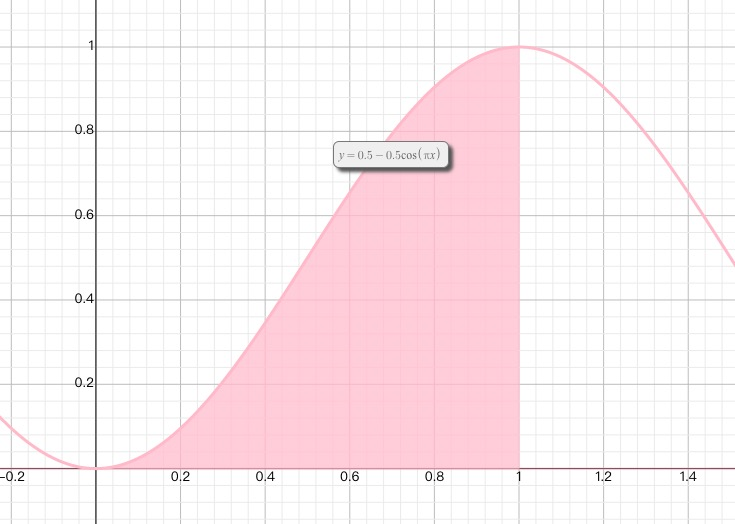

Method: `step()`
`ease()` with min 0, max 1.

`ease` function customizes the scroll process. Yes, it's the CUSTOMIZATION you want!!
To understand `window.requestAnimationFrame()` better, let's talk some knowledge
about webpage render.
Yes, another big topic.